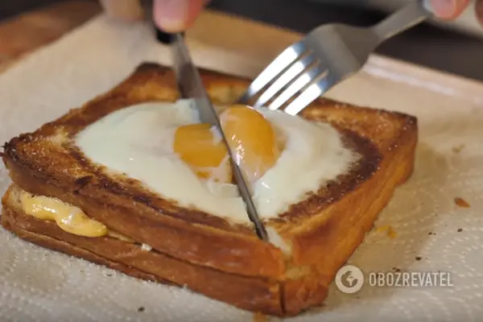Завтрак холостяка
Каждый холостяк хочет кушать вкусно, но не всегда есть желание и возможность готовить разные блюда. Именно для вас мы приготовили простой рецепт завтрака для любого холостяка. Готовить очень быстро, а главное получается вкусно.
Ингредиенты Хлеб тостовый - 100 г Масло сливочное - 25 г Сыр "Чедер" - 80 - 100 г Кетчуп - 20 - 30 мл Яйца - 1 шт Соль - добавить по вкусу |
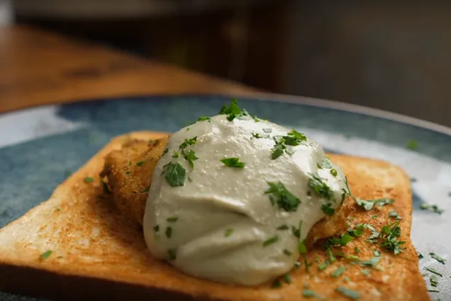Завтрак из яиц, обжаренных в кляре
Приготовить вкусный и полезный завтрак из яиц, обжаренных в кляре очень просто. Сегодня мы расскажем вам, как приготовить такой аппетитный завтрак вкусно и красиво. Блюдо получается сочным, аппетитным и необыкновенным.
Ингредиенты Яйца - 5 шт Белый хлеб - 150 г Тимьян - 3 - 5 г Розмарин - 3 - 5 г Авокадо - 1 - 2 шт Оливковое масло - 5 - 10 мл Творожная масса - 70 г Пшеничная мука - 50 г Подсолнечное масло - 200 мл Хлеб тостовый - 100 г Соль - добавить по вкусу Перец черный молотый - добавить по вкусу |
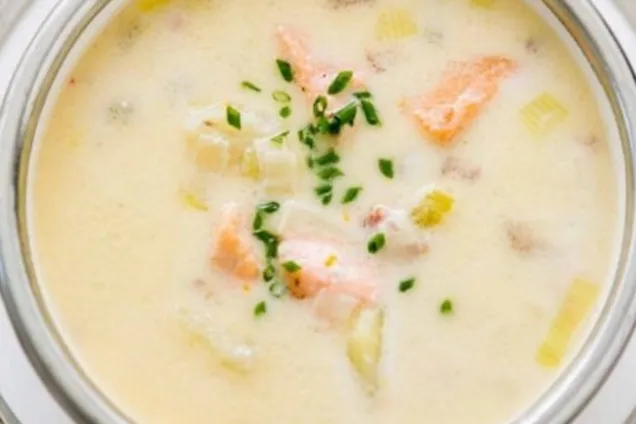Суп рыбака с лососем
Это чудесное блюдо сможет покорить ваше сердце. Все дело в непревзойденной нежности и питательности данного супа. Благодаря прекрасному сочетанию таких ингредиентов как лосось и сливки, данное блюдо становится для многих одним из самых любимых!
Ингредиенты Лук репчатый - 2-3 шт Картошка - 2-3 шт Морковь - 1 шт Перец белый молотый - по вкусу Соль - по вкусу Масло сливочное - 250 г Вода - 0,5 л Сливки - 1 л Зелень - по вкусу Лосось - 300-400 г |
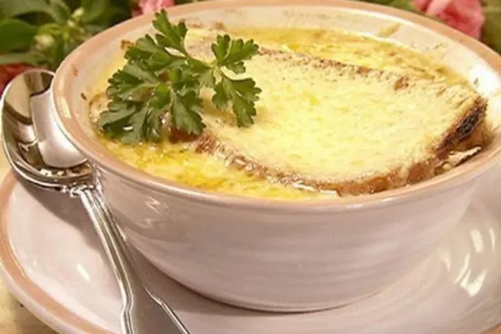Бюджетный луковый суп
Предлагаем приготовить французский луковый суп в бюджетном исполнении или просто луковый суп для студентов. В студенческие годы, живя в общежитии, приходится искать варианты интересных, вкусных, а главное недорогих блюд. Одним из таких рецептов сегодня мы поделимся с вами. Смотрите ниже фото с пошаговым приготовлением бюджетного и доступного супа.
Ингредиенты Лук репчатый - 2 кг Масло сливочное - 100 г Вода - 2 л Рафинированное подсолнечное масло - 2-3 ст. л. Батон - 1 шт Сыр твердый - 300 г Яблочный уксус - 1 стакан Бульонный кубик - 3 шт Прованские травы - 2 ч. л. Соль - по вкусу Пшеничная мука - 2-3 ст. л. Перец черный молотый - по вкусу |
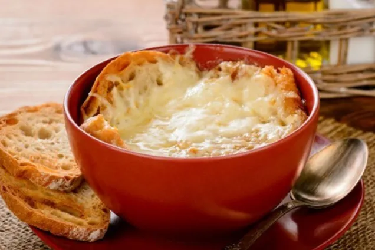Луковый суп с красным вином
Луковый суп с красным вином – один из вариантов классического французского лукового супа. Его насыщенный сладковатый вкус лука отлично сочетается с терпким свежим тимьяном и кисло-сладким вином. Тянущаяся сырная шапочка на хрустящей хлебной гренке – незаменимая изюминка этого блюда.
Ингредиенты Лук репчатый - 3 шт. Мясной бульон - 300-400 мл Вино красное полусухое - 1 стакан Масло сливочное - 2-3 ст. л. Хлеб - 1 шт. Сыр "Пармезан" - 30 г Сыр "Моцарелла" - 50 г Оливковое масло - 1 ч. л. Тимьян свежий - 2 веточки Лавровый лист - 2 шт Соль - по вкусу Чёрный перец - по вкусу |
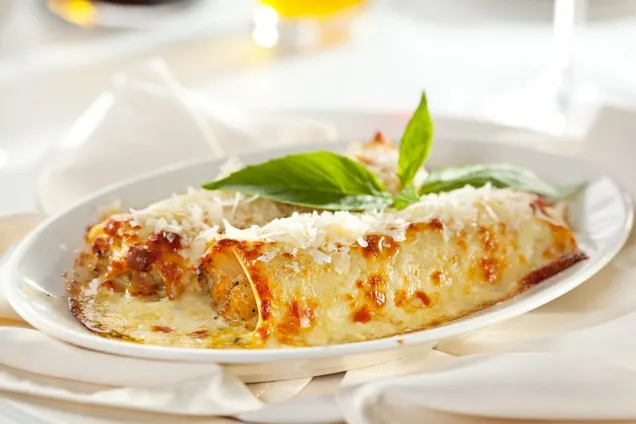Каннеллони с прованскими травами
Каннеллони – это вкусная и несложная в приготовлении альтернатива итальянской лазаньи с мясным фаршем. Попробовав наполненные питательной начинкой большие трубочки из теста (они же каннеллони), которые заправлены вкусным соусом, желание приготовить их еще не один раз возникнет обязательно!
Как это сделать в домашних условиях, смотрите в нашем рецепте. Ингредиенты Каннеллони - 150 г Говяжий фарш - 400 г Лук репчатый - 1 шт. Подсолнечное масло - 2 ст. л. Перец черный молотый - 2 щепотки Итальянские травы - 2 ч. л. Томатный сок - 200 мл Соль - По вкусу Сыр "Пармезан" - 100 г Чеснок - 3 зубка Масло сливочное - 50 г Молоко - 1 л Пшеничная мука - 3 ст. л. Мускатный орех молотый - 1 ч. л. |
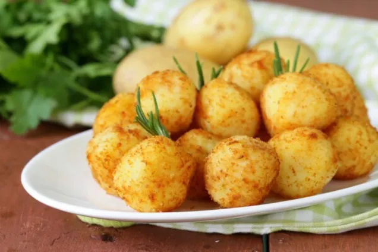Крокеты с беконом и сыром
Крокеты с беконом и сыром – это сытное вкусное блюдо, которое легко и быстро готовится, но несмотря на это дарит колоссальные вкусовые и ароматические ощущения всем, кто его попробует. Крокеты имеют хрустящую корочку, привлекательный золотистый цвет, приятный нежный вкус и фантастический аромат.
Ингредиенты Зелень - По вкусу Панировочные сухари - Для панировки Молоко - 1 л Масло сливочное - 100 г Лук - 1 шт. Соленые огурцы - 1 шт. Бекон - 100 г Куриная грудка вареная - 2 шт. Пшеничная мука - 200 г Соль - По вкусу Мускатный орех - По вкусу Перец черный молотый - По вкусу Перец чили молотый - По вкусу Сметана - 3 ст. л. Майонез - 1,5 ст. л. Яйца - 3 шт. Оливковое масло - 1 ч. л. Подсолнечное масло - Для жарки |
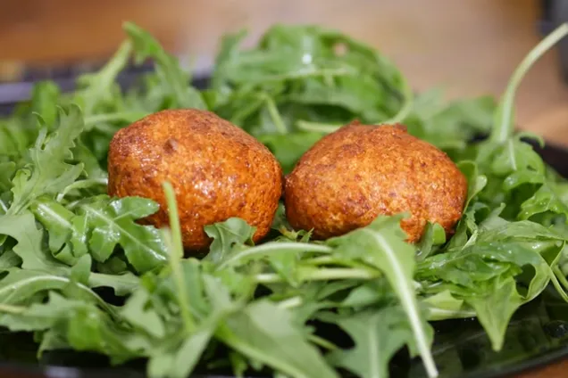Рыбные крокеты
Рыбные крокеты - это блюдо, которое понравится всем любителям рыбы и морепродуктов. Они хрустящие, ароматные, красивые. Такие крокеты - это усовершенствованная версия рыбных котлет, приготовленных во фритюре. Приготовить такое блюдо не сложно, однако в его состав входят не слишком простые ингредиенты, поэтому их нужно приобрести заранее.
Ингредиенты Кальмары - 1 шт Филе тилапии - 1 шт Тигровые креветки - 100-150 г Лук - 1 шт Белок - 1 шт Пшеничная мука - 1 ст. л. Крахмал кукурузный - 1 ст. л. Приправа к рыбе - по вкусу Маринованные огурцы - 2 шт Соевый соус - 1 ч. л. Сметана - 2 ст. л. Растительное масло - для жарки |
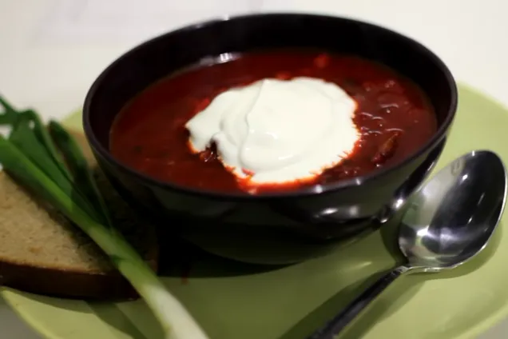Борщ на бульоне
Борщ – это изюминка украинской кухни, которая прославила нашу страну на весь мир. О неповторимом вкусе борща ходят легенды, и если вы хотите научиться готовить именно такой борщ, берите на заметку наш рецепт.
Ингредиенты Говядина на кости - 1 кг Вода - по вкусу Картошка - 500 г Капуста белокочанная - 300 г Свекла - 400 г Морков - 200 г Лук - 200 г Томатная паста - 3 ст.л. Уксус 6% - 1 ч.л. Чеснок - несколько зубков Лавровый лист - по вкусу Черный перец горошек - по вкусу Перец душистый - по вкусу Соль - по вкусу Зелень - по вкусу Растительное масло - для обжаривания |
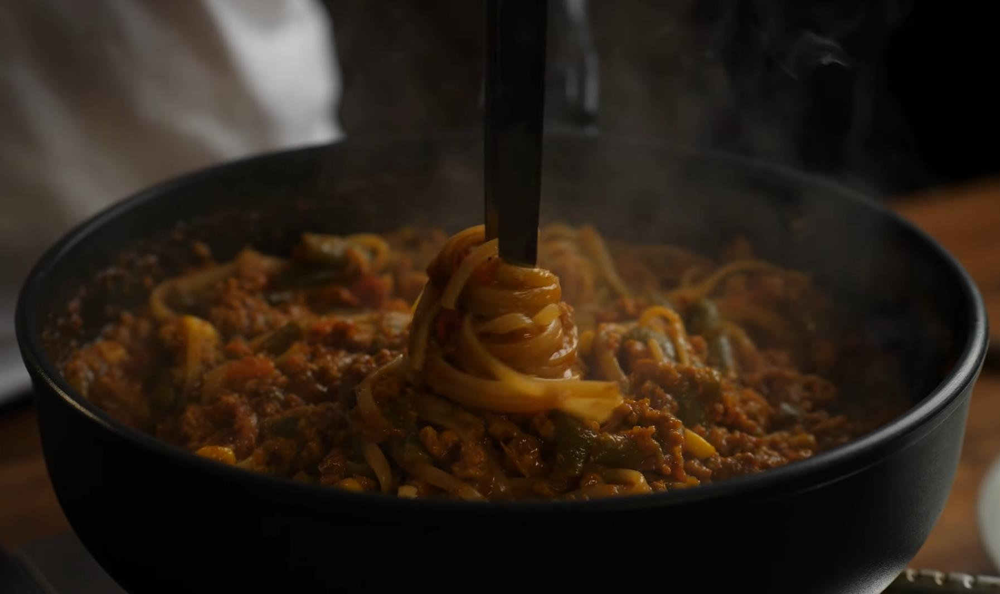Паста с мясомИнгредиенты: Фарш 1 лоток Овощная смесь заморозка 1уп Томаты в соку 1 банка 800гр Спагетти 300гр Пармезан тертый 4ст ложки ст ложка сушеного лука Паприкa Чеснок 2 ветки тимьяна |
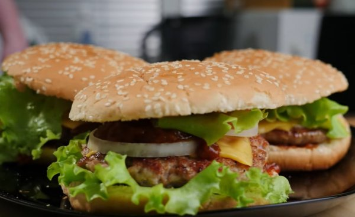Домашний гамбургер
Видео рецепт вкуснейшего домашнего гамбургера от славного друже обломов. Домашний бургер у обломова получается лучше чем в макдональдсе. Соус приготовлен по рецепту шеф повара Гордона Рамзи.
Ингридиенты (На 4 чел.) Булочки для гамбургера Свинина Бекон Помидор Лук Чеснок Сыр чеддер Салат Корнишоны маринованные Соус: Кетчуп2 ст.л. острый перец1 шт. Вустерширский соус2 ст.л. Уксус винный1 ст.л. |
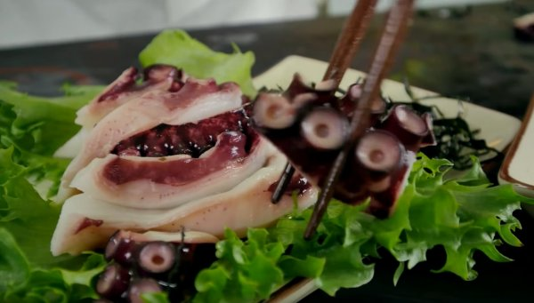Сашими из осьминога
Рецепт приготовления дом сашими из осьминога от славного друже обломов, что может быть лучше, чем самому приготовить целого осьминога в домашних условиях? Незабываемый опыт.
Ингридиенты (На 8 и более чел.) Осьминог целый1 - шт. уксуса - 1 ст.л. соевого соуса - 1 ст.л. |
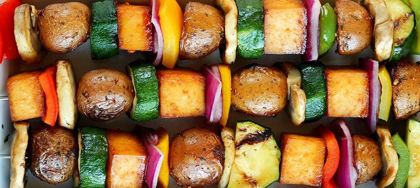
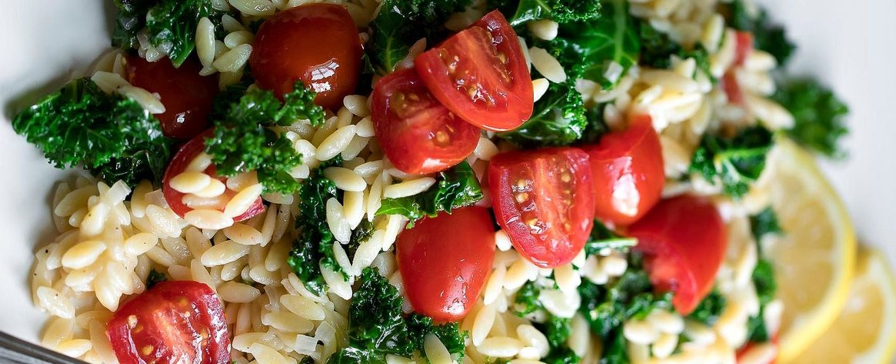
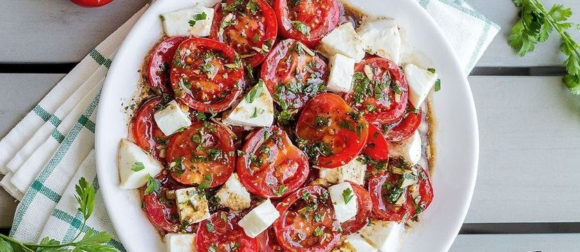
Гастрономия — это искусство есть, когда нет аппетита, и пить, когда нет жажды.
Общее
Здесь можно найти информацию о самых простых блюдах, которые сможет приготовить каждый, даже человек, ни разу не стоявший около плиты. У нас есть большое количество рецептов, протестированных Славным Друже. И гарантированно каждый из них вам понравится.
 Мой Instagram
Мой Instagram
По вопросам рекламы
oblomoffadvert@gmail.com
oblomoffadvert@gmail.com
 Мой Tiktok
Мой Tiktok
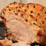 oblomoff
ПОИСТИНЕ ТРУШНЫЕ САШИМИ ИЗ КРЕВЕТКИ!https://youtu.be/nXo03LAGJ3g
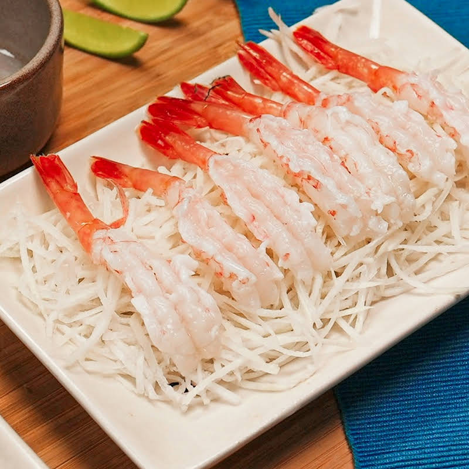
Data: 27.11.2021
oblomoff
Так чисто взяли топчик с Шайтаном. =) ПОнимаю что всем насрать, но для нас, раков, это большое достижение))))Data: 13.09.2021